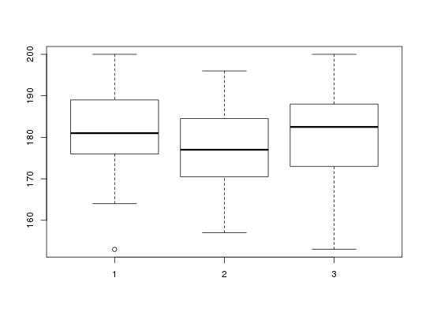

Data for Exercise 10.26
A data frame with 48 observations on the following 6 variables.
Kitchens, L. J. (2003) Basic Statistics and Data Analysis. Duxbury
str(Region)#> 'data.frame': 48 obs. of 6 variables: #> $ West : int 153 164 171 173 176 178 180 181 181 182 ... #> $ Central: int 157 165 167 170 171 172 175 177 179 180 ... #> $ East : int 153 165 167 171 175 176 179 182 183 184 ... #> $ Index : int 153 164 171 173 176 178 180 181 181 182 ... #> $ Region : int 1 1 1 1 1 1 1 1 1 1 ... #> $ Ranks : num 1.5 4 11 14 17.5 20 23.5 25.5 25.5 28 ... #>attach(Region)The following object is masked from package:BSDA: Regionboxplot(Index~Region)anova(lm(Index~as.factor(Region)))#> Analysis of Variance Table #> #> Response: Index #> Df Sum Sq Mean Sq F value Pr(>F) #> as.factor(Region) 2 115.4 57.719 0.4224 0.6581 #> Residuals 45 6149.5 136.656 #>detach(Region)